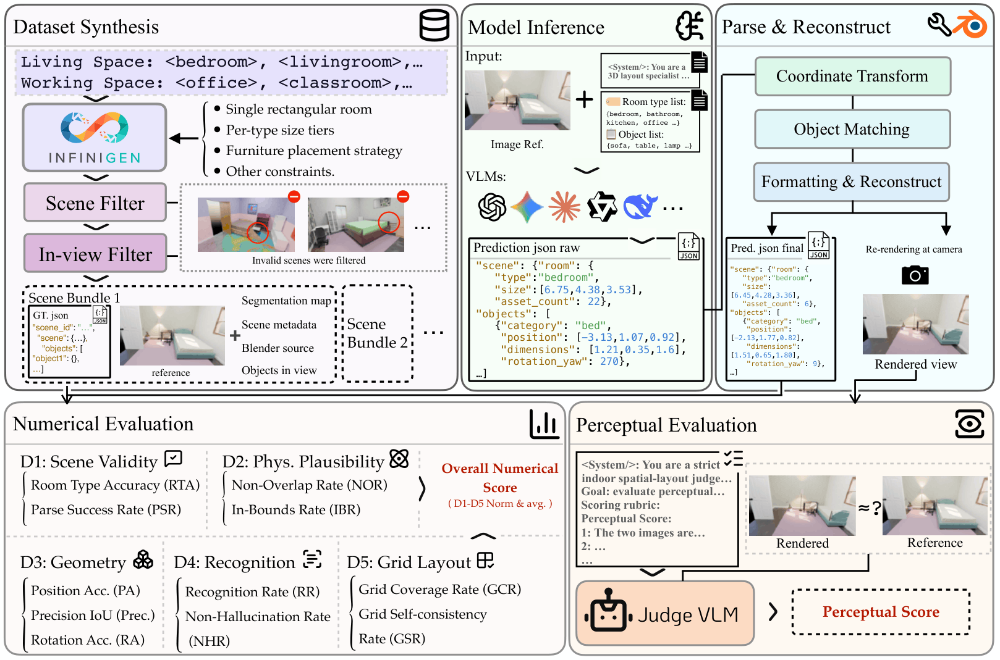
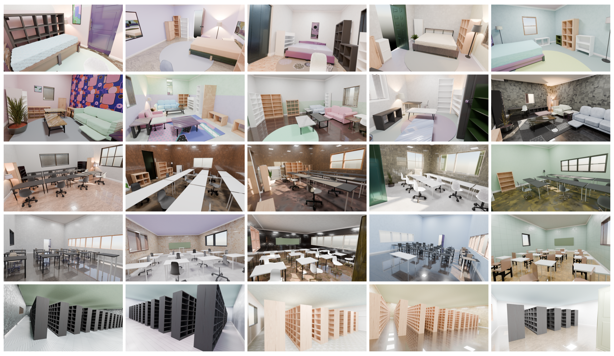

We introduce IDEAL-Bench, an evaluation suite that requires VLMs to predict structured 3D layouts on photorealistic indoor scenes, capturing each visible object's position, orientation, and extent rather than just answering questions about them. Predictions are scored across eleven metrics spanning five numerical dimensions, paired with a perceptual render-and-compare protocol that substitutes predicted poses into the original scene and re-renders it for comparison against the reference image.
- We introduce holistic 3D layout inference as a new evaluation paradigm for VLM spatial competence, requiring structured, geometrically verifiable estimations of semantic-aware object pose and extent from a single image.
- We release IDEAL-Scenes, a dataset of 1,000 indoor scenes across 10 room types with programmatically extracted ground-truth layouts and re-renderable Blender source files, together with IDEAL-Bench, an evaluation suite combining numerical geometric metrics with perceptual render-and-compare assessment validated against human judgments.
- Our evaluation of 15 VLMs uncovers a critical gap between linguistic proficiency and geometric precision, identifying coordinate estimation as a primary bottleneck. These findings demonstrate that IDEAL-Bench serves as a necessary complement to existing benchmarks by surfacing hidden geometric deficiencies in holistic 3D reasoning.
Holistic 3D Layout Inference

From a single RGB image, a candidate object-category list, and a set of candidate room types, a model must produce a globally consistent, structured 3D layout: the room type, the room dimensions, and for every visible object its category, 3D center position, bounding-box extent, and yaw rotation. No depth, camera parameters, or instance masks are provided, and the model reasons about 3D structure purely from monocular appearance.
IDEAL-Scenes

A synthetic indoor dataset of 1,000 scenes spanning 10 room types (bedroom, home studio, living room, kitchen, bathroom, dining room, office, meeting room, classroom, and library), with 100 scenes per type. Built on a procedural pipeline based on InfiniGen, each scene is a self-contained bundle: a rendered RGB image, programmatically exact ground-truth annotations, the native scene.blend source file, an instance segmentation map, and scene metadata. The generation pipeline is released on GitHub and designed to be extensible, supporting additional room types, asset libraries, and rendering from arbitrary camera viewpoints.
Evaluation Protocol
IDEAL-Bench scores every prediction through two parallel pathways: a numerical comparison against the ground-truth layout, and a perceptual comparison against a re-rendered reconstruction.
Numerical evaluation
Predicted objects are matched to ground-truth instances. For non-grid scenes, we use category-wise Hungarian matching to assign each predicted object to its closest-matching ground-truth instance and compare position, dimensions, and rotation. For grid-structured scenes (classrooms, libraries, offices) where per-instance correspondence is ill-posed, we assess structural regularity directly instead. Predictions are then scored along five functionally distinct dimensions, each normalised to [0, 100]. The Overall score is the unweighted mean of all eleven applicable rate metrics, so no single dimension is privileged a priori.
- Parse Success Rate (PSR)
- Room Type Accuracy (RTA)
- Non-Overlap Rate (NOR)
- In-Bounds Rate (IBR)
- Position Accuracy (PA)
- Precision IoU (Prec.)
- Rotation Accuracy (RA)
- Recognition Rate (RR)
- Non-Hallucination Rate (NHR)
- Grid Coverage Rate (GCR)
- Grid Self-consistency Rate (GSR)
Perceptual evaluation
For every object in view, the predicted position, yaw, and dimensions replace the ground-truth values in the original Blender scene, and the result is re-rendered from the source camera. Hallucinated objects are rendered as red spheres to make false positives explicit. A Judge VLM (Claude Opus 4.7) then compares each reconstruction against the reference image, assigning a 1–5 spatial-similarity score together with a strict total ranking, both repeated five times and averaged. Because weaker models often produce reconstructions with missing assets or failed composition, this pathway is restricted to the six top-scored models across 200 scenes (20 per room type).

Leaderboard
Numerically, D1 (Scene Validity) is near-saturated and D4 (Object Recognition) remains uniformly strong, while performance collapses on D3 (Geometric Accuracy). Even the leader, Gemini 2.5 Pro, reaches only 62.1/100 overall. Parameter count is also a weak predictor of rank: Gemma-4-31B-IT ranks third overall, ahead of open-source models with far more parameters, and GPT-4o outranks the newer GPT-5.4. Two models, InternVL3.5-30B-A3B and Janus-Pro-7B, fail to parse valid output altogether.
| Overall | D1: Scene Val. | D2: Phys. Plaus. | D3: Geo. Acc. | D4: Obj. Recog. | D5: Grid Layout | |||||||||
|---|---|---|---|---|---|---|---|---|---|---|---|---|---|---|
| Model | Ovr.↑ | Rank↓ | Geo.↑ | RTA↑ | PSR↑ | NOR↑ | IBR↑ | PA↑ | Prec.↑ | RA↑ | RR↑ | NHR↑ | GCR↑ | GSR↑ |
| Proprietary Models | ||||||||||||||
| Gemini 2.5 Pro | 62.1 | 1 | 40.1 | 87.5 | 100.0 | 80.9 | 34.3 | 10.8 | 25.5 | 37.7 | 89.9 | 90.3 | 29.1 | 97.3 |
| GPT-4o | 60.4 | 2 | 35.9 | 88.5 | 100.0 | 84.6 | 46.1 | 11.5 | 23.1 | 20.0 | 72.8 | 92.2 | 25.2 | 100.0 |
| Claude Sonnet 4.6 | 59.2 | 4 | 34.7 | 88.5 | 100.0 | 80.6 | 34.6 | 4.9 | 18.6 | 26.8 | 85.4 | 88.1 | 27.8 | 95.7 |
| GPT-5.4 | 56.7 | 5 | 28.4 | 89.3 | 100.0 | 65.0 | 55.3 | 8.5 | 24.3 | 33.7 | 82.2 | 89.9 | 28.6 | 46.7 |
| Open-source Models | ||||||||||||||
| Gemma-4-31B-IT | 59.7 | 3 | 35.7 | 84.4 | 99.9 | 78.3 | 40.9 | 9.8 | 24.1 | 20.8 | 81.8 | 92.6 | 24.1 | 99.9 |
| Qwen3-VL-8B | 55.1 | 6 | 28.6 | 84.1 | 100.0 | 62.2 | 52.5 | 8.2 | 18.5 | 19.6 | 73.0 | 91.1 | 14.4 | 82.2 |
| GLM-4.6V | 54.4 | 7 | 30.7 | 87.0 | 100.0 | 60.9 | 29.6 | 4.4 | 10.1 | 26.4 | 76.8 | 91.2 | 13.3 | 99.3 |
| Qwen2.5-VL-72B-Instruct | 52.6 | 8 | 27.9 | 85.4 | 100.0 | 64.8 | 26.7 | 2.1 | 7.7 | 18.5 | 70.6 | 91.4 | 11.9 | 99.3 |
| Qwen3-VL-235B-A22B-Instruct | 51.8 | 9 | 24.3 | 90.3 | 76.0 | 58.5 | 56.1 | 7.2 | 21.2 | 22.8 | 76.7 | 90.4 | 16.1 | 54.3 |
| GLM-4.6V-Flash | 51.5 | 10 | 24.0 | 86.2 | 92.5 | 53.6 | 49.0 | 4.7 | 11.8 | 19.2 | 73.7 | 91.2 | 7.5 | 76.9 |
| Qwen3-VL-30B | 50.8 | 11 | 22.6 | 84.0 | 92.0 | 56.8 | 44.2 | 7.5 | 14.6 | 21.6 | 79.9 | 89.2 | 22.9 | 46.5 |
| InternVL3.5-8B | 45.9 | 12 | 27.0 | 80.8 | 43.7 | 66.9 | 23.0 | 2.6 | 4.9 | 18.4 | 72.0 | 84.2 | 8.9 | 100.0 |
| LLaVA-1.6-Mistral-7B | 44.5 | 13 | 17.5 | 64.8 | 98.1 | 16.3 | 70.6 | 2.4 | 4.6 | 19.2 | 69.2 | 82.8 | 8.0 | 53.3 |
| InternVL3.5-30B-A3B | × Task Failed | |||||||||||||
| Janus-Pro-7B | × Task Failed | |||||||||||||
The full breakdown above reports Overall, competition Rank, Geo. (the mean of D3 and D5, isolating pure geometric reasoning from task-compliance), and every sub-metric behind D1–D5. Bold marks the best value per metric, underlined marks the second-best.
Perceptual leaderboard
The perceptual evaluation is restricted to the six top-scored models, judged across 200 scenes (20 per room type). The resulting ranking largely mirrors the numerical leaderboard, with one notable exception: GPT-4o ranks second overall numerically but drops to second-to-last here. Its high numerical score comes from getting individual objects roughly right, which is not the same as producing a layout that looks coherent as a whole scene. Together with the numerical metrics, this perceptual check offers a more intuitive, visual way to assess a model's 3D understanding and spatial reasoning as a whole.
| Model | Mean Perceptual↑ | Mean Rank↓ | Top-1 (%) |
|---|---|---|---|
| Gemini 2.5 Pro | 3.56 | 2.40 | 41.2 |
| GPT-5.4 | 3.49 | 2.45 | 23.5 |
| Gemma-4-31B-IT | 3.22 | 3.26 | 11.8 |
| Claude Sonnet 4.6 | 3.06 | 3.39 | 17.6 |
| GPT-4o | 2.78 | 4.15 | 2.9 |
| Qwen2.5-VL-72B-Instruct | 1.92 | 5.39 | 2.9 |
Mean Perceptual: average 1–5 Likert score from the Judge VLM, repeated five times. Mean Rank: average strict total ranking per scene. Top-1: share of scenes where the model's reconstruction was judged best.
Conclusion
We present IDEAL-Scenes and IDEAL-Bench, a dataset and evaluation suite for testing whether vision-language models can recover a coherent 3D layout. Our evaluation of fifteen such models reveals a consistent pattern of strengths and bottlenecks in how they reason about space.
Scene validity and object recognition are strong across the board, but geometric accuracy collapses for every model, suggesting that current VLMs are trained to describe scenes rather than to measure them.
Performance does not track parameter count, with smaller models sometimes outperforming much larger ones, suggesting that metric 3D understanding depends more on training composition than on raw scale.
Models generate internally regular grids without anchoring them correctly to the world, the same blind spot that causes rankings to diverge from QA-based and primitive-reconstruction benchmarks.
Together, these findings position IDEAL-Bench as a diagnostic complement to existing benchmarks, surfacing geometric reasoning failures that QA-based evaluation cannot.
BibTeX
@misc{cai2026idealbenchindoordatasetevaluation,
title={IDEAL-Bench: Indoor Dataset and Evaluation suite for Analyzing 3D Layout reasoning},
author={Yuening Cai and Junwei Zhou and Youran Qu and Yu-Wing Tai},
year={2026},
eprint={2607.03614},
archivePrefix={arXiv},
primaryClass={cs.CV},
url={https://arxiv.org/abs/2607.03614},
}